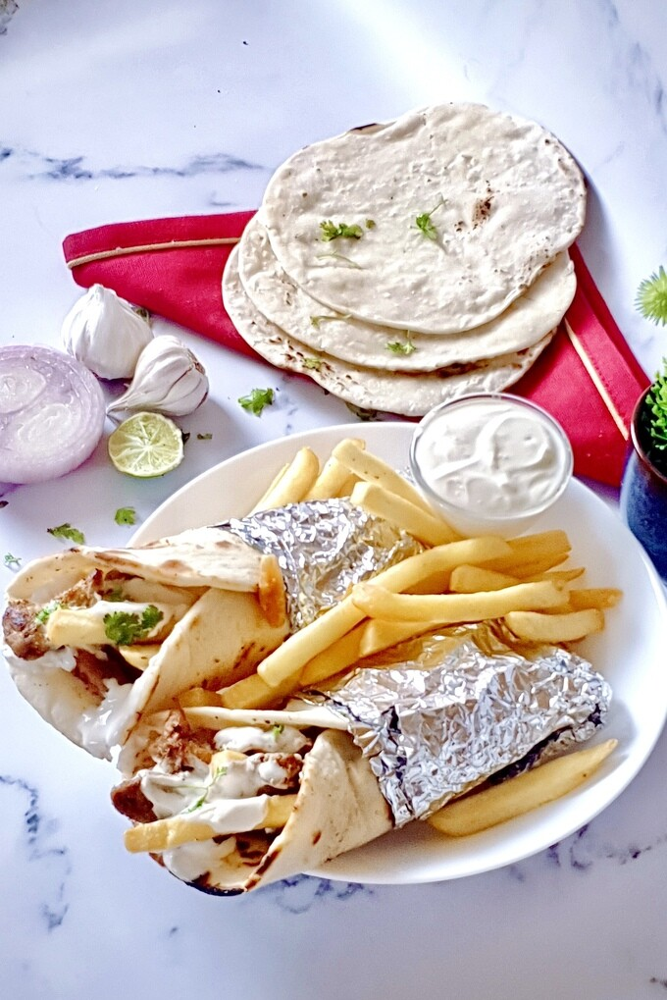

Shawarma Recipe

description :
Shawarma is middle eastern dish o grilled meat that is typically served
in pita bread with vegetables and sauces. The meat is typically marinated
in a mixture of spices and then grilled on a vertical rotiserrie
shawarma can be made with a variety of meats, including chicken,beef,lamb or falafel.
Ingredients :
- meat
- spices
- vegetables
- sauces
- pita bread
- cheese
Steps :
-
You can make a chicken shawarma bowl or chicken shawarma wrap and add in some fresh veggies to it. You can add some chopped tomatoes, cucumbers, onions and fresh lettuce or any other veggies of your choice.
-
You can try and use a different meat! You can make beef shawarma, lamb shawarma and even prawn shawarma and fish shawarma using the ingredients given in this recipe! Please make sure you adjust your cooking according to the meat you use.
-
Change your method of cooking! You can grill your chicken or bake it in the oven. You can also use any other method you prefer. Please adjust the cooking time according to the method you use.
-
You can go ahead and create the creamy garlic sauce using only Greek yogurt to make this meal lighter and healthier. This will give you a light, garlicky yogurt sauce. You can also skip out on the French fries and the pita to make the recipe even lighter.